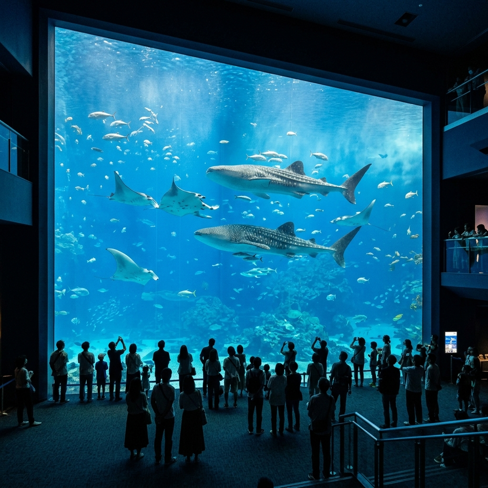
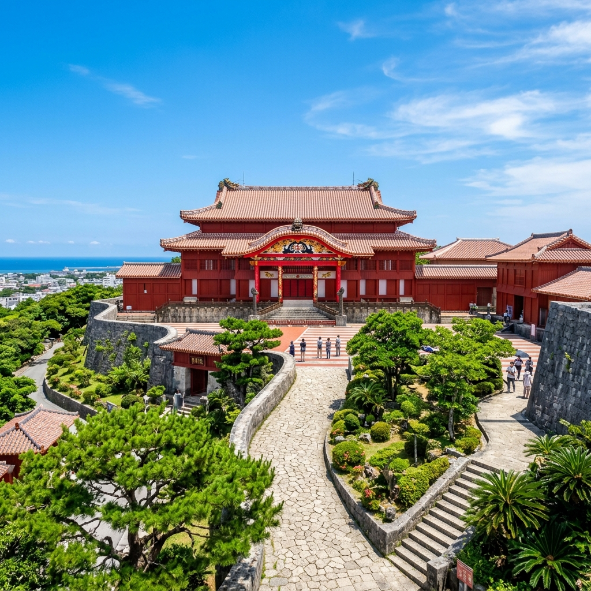
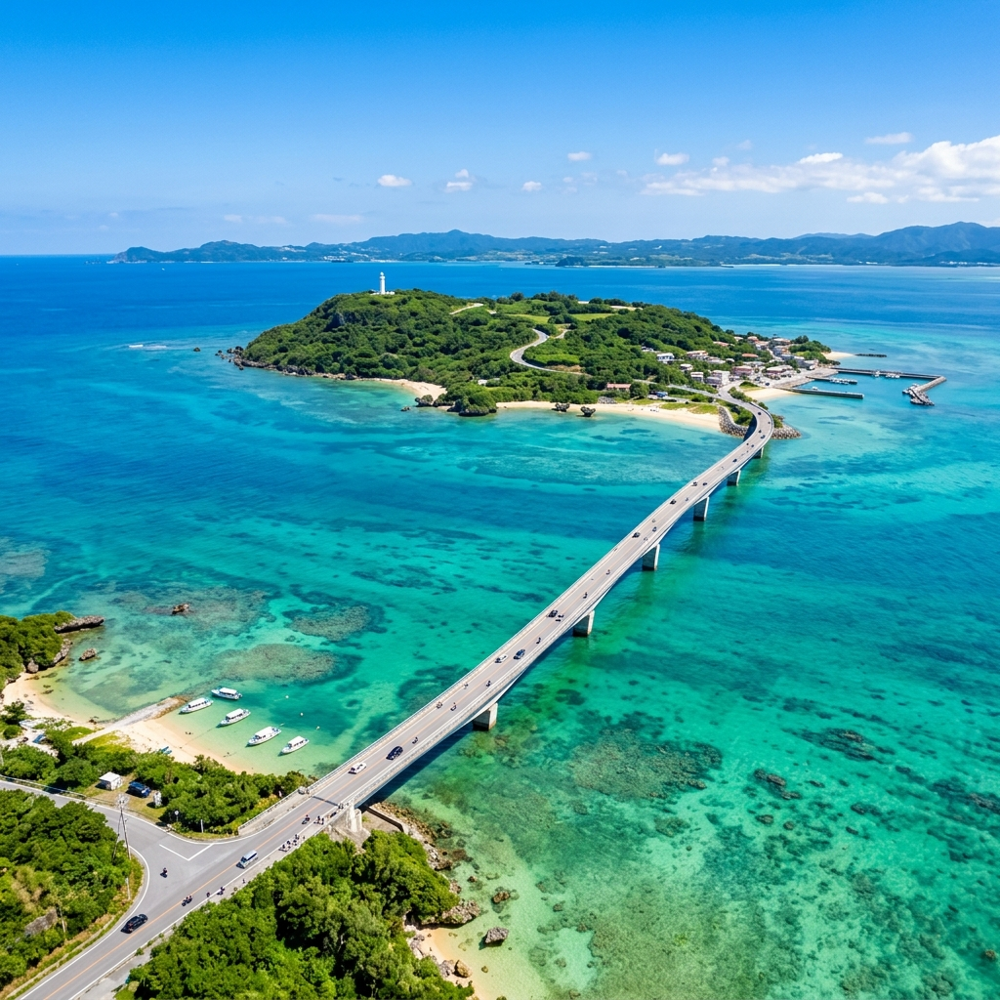
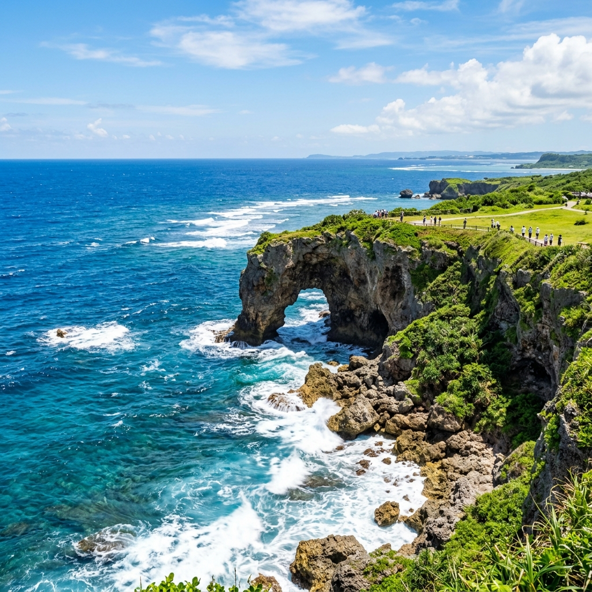
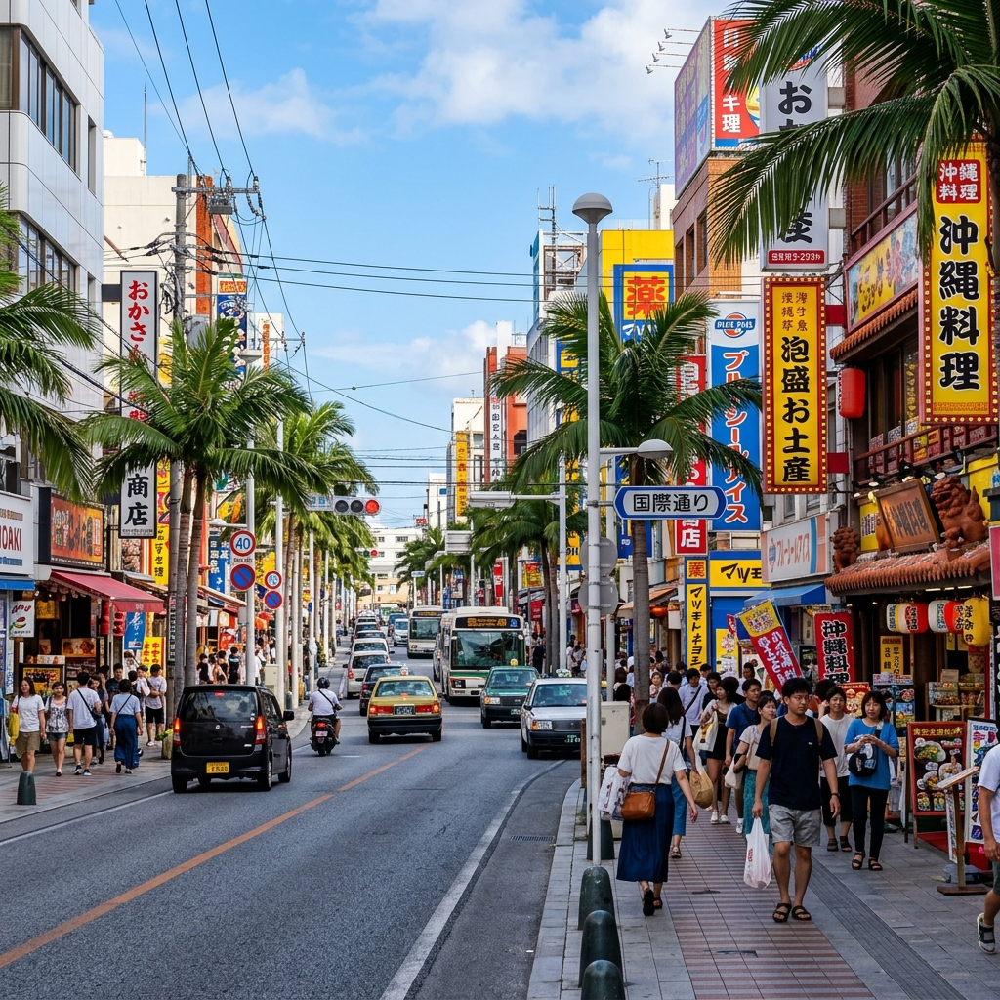
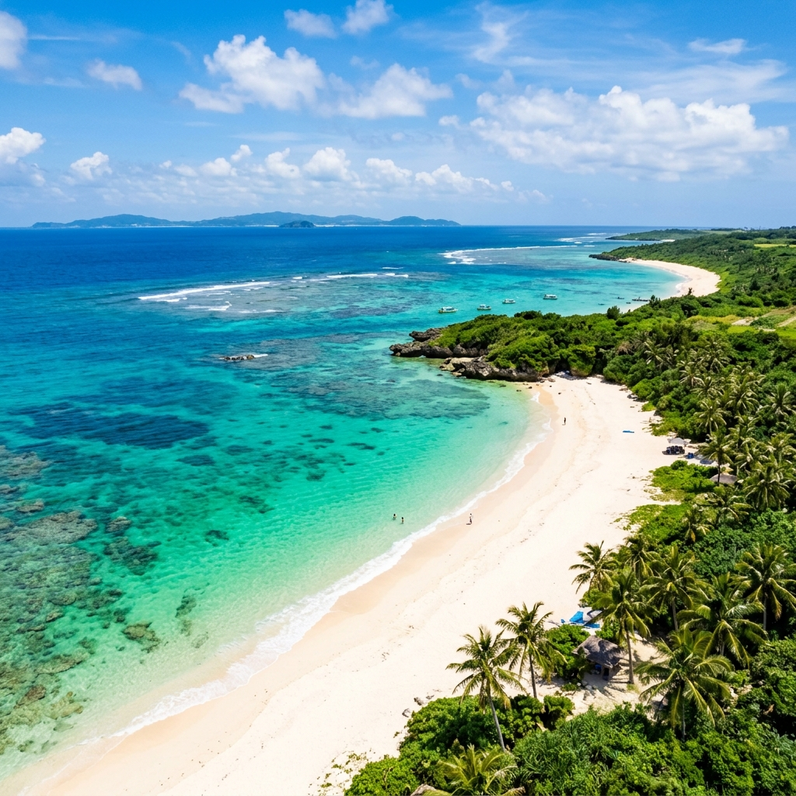

水族館・自然沖縄美ら海水族館
「沖縄の海との出会い」をテーマに、神秘的な海の世界を再現した世界最大級の水族館。巨大水槽「黒潮の海」を泳ぐ全長8.7mものジンベエザメやナンヨウマンタの群れは圧倒的なスケール感です。
日本最南端の県であり、かつて琉球王国として栄えた独自の歴史と文化を持つ沖縄。年間を通して温暖な気候に恵まれ、世界屈指の透明度を誇る美しい海に囲まれています。豊かな自然、歴史的な世界遺産、そして温かい人々と美味しい料理が織りなす、極上のリゾート体験をお届けします。
沖縄を訪れたら絶対に外せない、人気の代表的観光スポット

水族館・自然「沖縄の海との出会い」をテーマに、神秘的な海の世界を再現した世界最大級の水族館。巨大水槽「黒潮の海」を泳ぐ全長8.7mものジンベエザメやナンヨウマンタの群れは圧倒的なスケール感です。

歴史・世界遺産かつて琉球王国の政治、外交、文化の中心地として栄えた栄華の象徴。朱色に美しく彩られた独特の建築様式は、中国と日本の築城文化が融合した独自の歴史的価値を持ち、世界遺産にも登録されています。

絶景・ドライブ本島北部と古宇利島を結ぶ、全長1,960メートルの大人気ドライブコース。橋の両側に広がるエメラルドグリーンの絶景は、まるで海の上を走り抜けているかのような爽快感を味わうことができます。

絶景・自然
ショッピング・グルメ那覇市の中心部に位置し、「奇跡の1マイル」と呼ばれる沖縄最大のメインストリート。お土産店やレストラン、カフェが約1.6kmにわたって並び、常に活気と笑顔が溢れる場所です。

ビーチ・絶景「東洋一の美しさ」と称される、宮古島を代表する白砂のロングビーチ。きめ細かな白い砂浜が約7kmにわたって続き、言葉を呑むようなコバルトブルーのグラデーションの海が広がっています。
あなたの旅のスタイルに合わせた最適なツアーパッケージをお選びください
旅行をより快適で楽しくするための役立つヒントをご紹介します。
海水浴やマリンスポーツを楽しむなら、梅雨明けの6月下旬から10月がベスト。観光メインなら暑さが和らぎ過ごしやすい3〜4月や11〜12月がおすすめです。
沖縄本島は南北に長いため、自由度の高いレンタカーでの移動が最も便利です。那覇市内はモノレール（ゆいレール）や路線バスも充実しています。
もちもちした太麺の「沖縄そば」、ビタミン豊富な「ゴーヤーチャンプルー」、とろけるような三枚肉の「ラフテー」など、独特の郷土料理は必食です。
「めんそーれ」は沖縄の方言で「ようこそ」という意味です。豊かな自然とあたたかな島風、そして「いちゃりばちょーでー（一度会えばみな兄弟）」の精神で、あなたを温かくお迎えします。